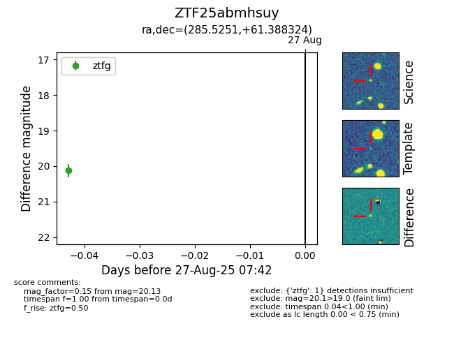

Target ZTF25abmhsuy at 2025-08-27 07:42, see:
FINK: fink-portal.org/ZTF25abmhsuy
Lasair: lasair-ztf.lsst.ac.uk/objects/ZTF25abmhsuy
ALeRCE: alerce.online/object/ZTF25abmhsuy
alt names
ZTF25abmhsuy (ztf,fink)
coordinates:
equatorial (ra, dec) = (285.5251,+61.38832)
galactic (l, b) = (91.7836,+22.36347)
photometry
last ztfg=20.13
1 ztfg detections
